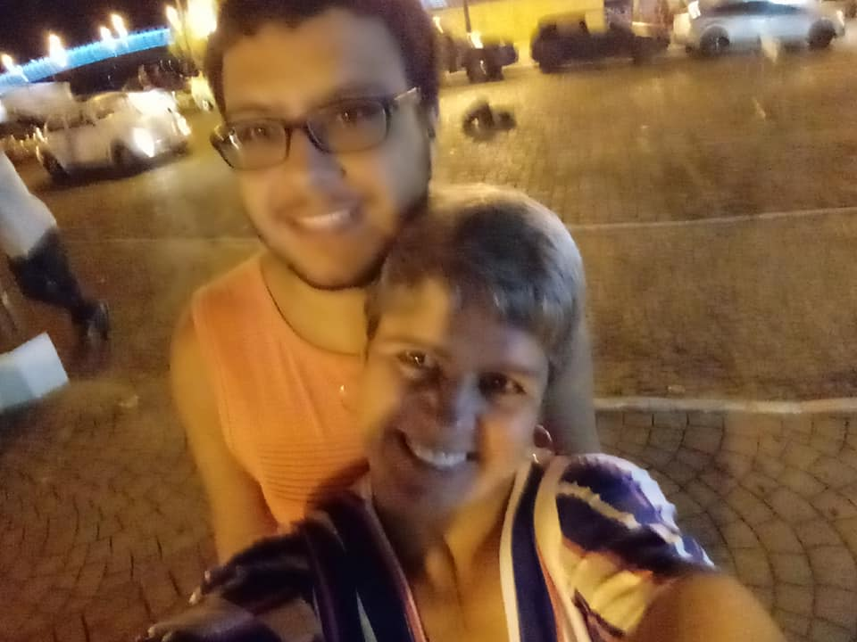

projeto-portfolio

Olá sou Felipe de Oliveira Santos tenho 22 anos , Moro Niteroi Fonseca , adoro ler livros e Gosto Muito De Cachorro
As instituiçoes onde eu estudei
-
Labenu (Curso) Full Stack
- Microcamp (Curso) Montagem Manutençao de Computadores
- VGS (Curso Preparatorio)
- Assistente Administrativo
Técnicas e Comportamento
- Aprendizagem Razoavel ( Tenho facilidade de aprender mas perco foco facil)
- Acho que tenho facilidade em me comunicar (Dependendo do ponto de vista pode ser pssivo/agressivo)
- Eu demoro pra fazer as coisas (Tenho uma dificuldade pra fazer as coisas em certos tempo)
- Sempre estudo anotando as coisas (caso esqueça eu releio no cadenor)
Lista de Contato
-
Linkedin Linkedin
- Github Github
- Gmail (felipe123oliveirasantos@gmail.com)
Projetos feitos
- Projeto blackjack Projeto-blackjack